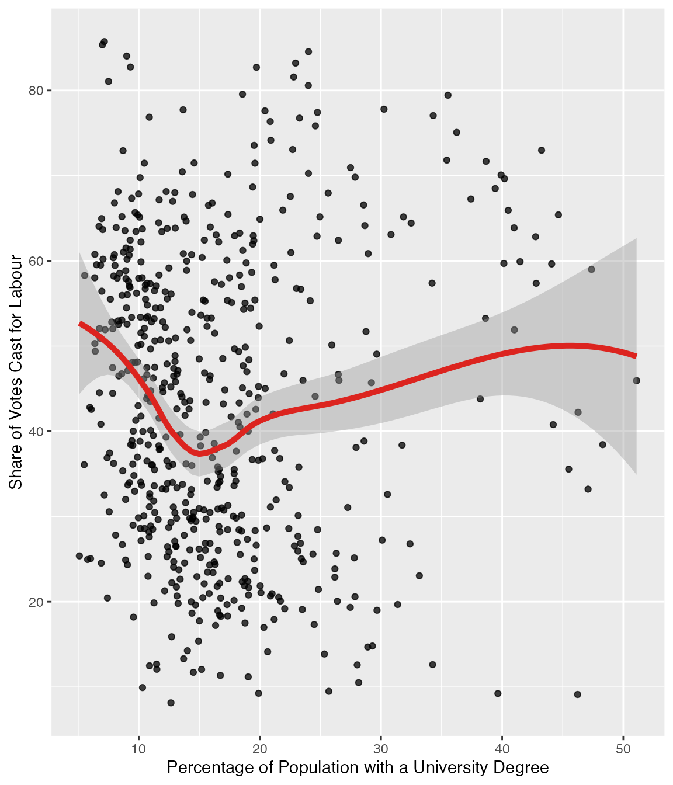

../docs/vignettes/introduction.Rmd
introduction.Rmdparlitools
parlitools is a collection of datasets, maps and data retrieval functions for analysing UK politics.
In addition to this introductory vignette, there are vignettes on using parlitools with cartogram, the British Election Study dataset and mapping local authorities.
party_colours - A tibble with the ID, name and hex code for the official colour of a variety of political parties, taken from Wikipedia. Includes all political parties with MPs and a number without MPs. (Sources: https://en.wikipedia.org/wiki/Wikipedia:Index_of_United_Kingdom_political_parties_meta_attributes, mnis::ref_parties())
bes_2015 - A tibble with the British Election Study 2015 Constituency Results Version 2.2. For information on all the variables in this dataset, see the bes-2015 vignette (Source: http://www.britishelectionstudy.com/data-object/2015-bes-constituency-results-with-census-and-candidate-data/)
leave_votes_west - The percentage of votes cast for leave in the 2016 EU referendum. Some constituencies have actual results and others only have estimates by Chris Hanretty; in cases where the actual cote count is known, both the estimates and the actual results are reported. (Sources: Hanretty, C. (2017). Areal interpolation and the UK’s referendum on EU membership. Journal of Elections, Public Opinion and Parties, 27(4), 466–483. https://doi.org/10.1080/17457289.2017.1287081)
current_mps - Uses functions from hansard and mnis to create a tibble with data on all current MPs, their party affiliation and their constituency.
mps_on_date - Uses functions from hansard and mnis to create a tibble with data on all MPs from a given date, their party affiliation and their constituency.
west_hex_map - A hexagonal cartogram, stored as a simple feature and data frame, of Westminster parliamentary constituencies. west_hex_map can be used to create maps like this:
local_hex_map - Hexagonal cartogram, A hexagonal cartogram, stored as a simple feature and data frame, of all Local Authorities in England, Wales and Scotland.
There are a variety of potentially relevant data sources and datasets on UK politics, far too many for me to include them all in this package, and many of which are far too large. This list is by no means complete:
Electoral Commission - Electoral results dating back to 2005.
British Election Study - A large selection of open data, including panel surveys, linked data and aggregated Twitter data, covering elections and referenda.
hansard & mnis data retrieval packages for parliamentary APIs.
Open Council Data has data on the names, parties, and wards of all UK councillors, updated more or less weekly.
parlitools
parlitools contains extensive demographic data in the census_11 dataset. The map below shows the relationship between votes cast for the Labour party and the percentage of the local population holding university degrees.
library(dplyr)
library(ggplot2)
census_11 <- parlitools::census_11
bes_2017 <- parlitools::bes_2017
elect_results <- left_join(census_11, bes_2017)
degree_plot <- ggplot(elect_results, aes(y=lab_17, x=degree)) +
geom_point(alpha=0.75) +
geom_smooth(size=1.75, colour = "#DC241F") +
ylab("Share of Votes Cast for Labour") +
xlab("Percentage of Population with a University Degree")
degree_plot